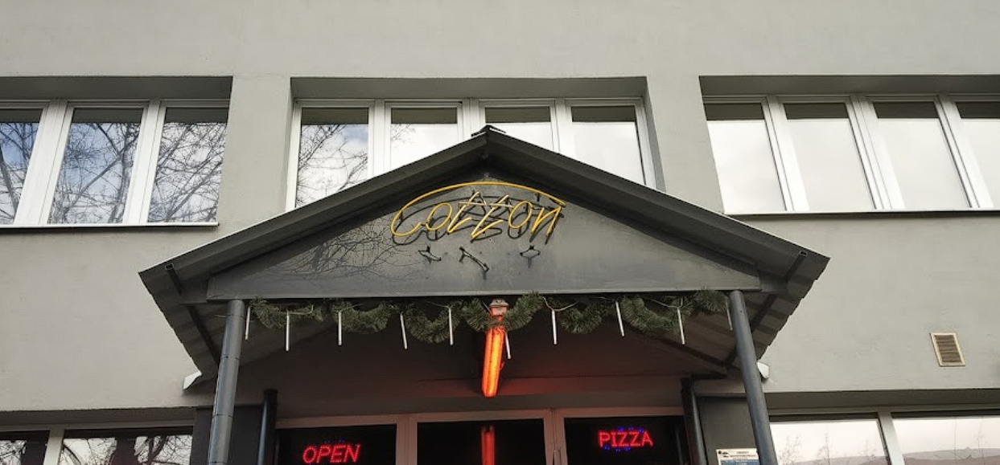
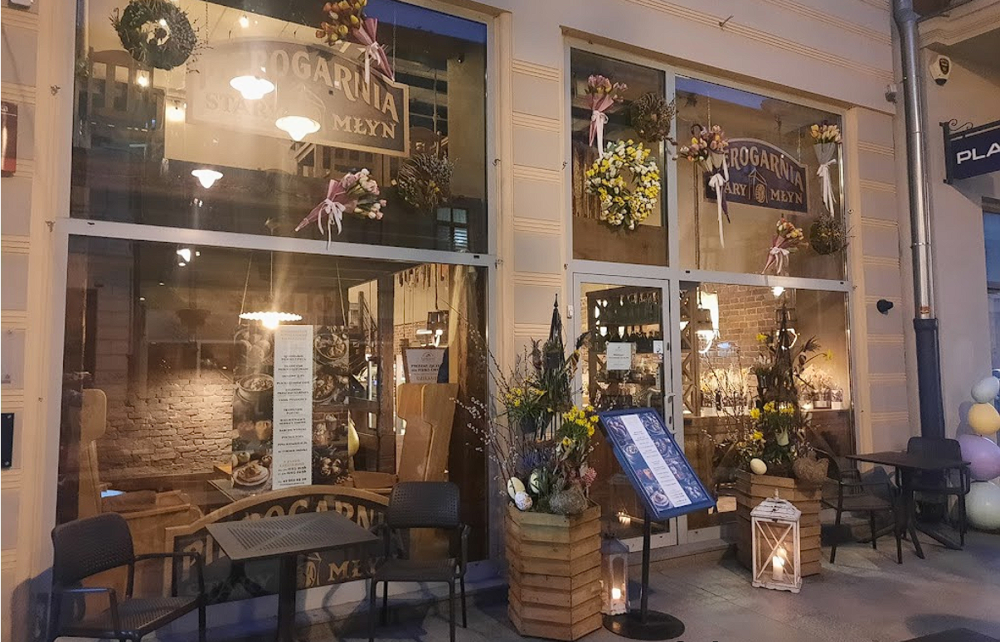
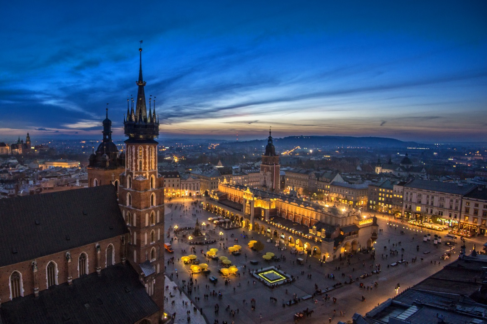
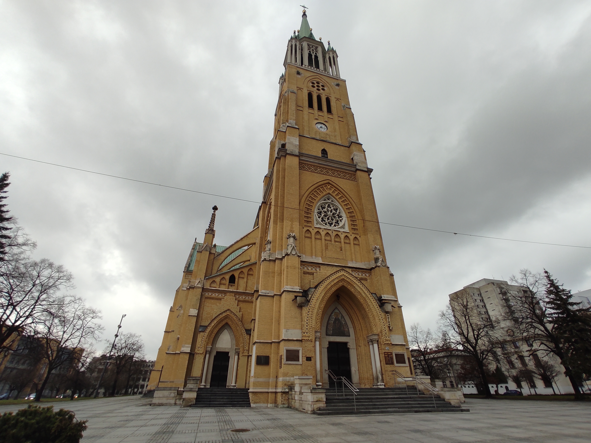
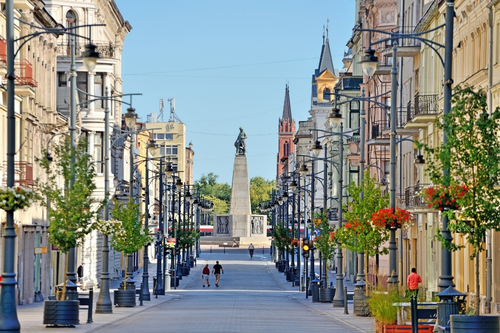

Visit
From Sopot with Love
Hey,
"i finally went to Sopot,, it's what I said at the end of my trip. In this article you will discover why Sopot is a city to visit at all costs

City
Flanki: the polish drinking Game that unites students in Lodz
When it comes to fostering camaraderie and creating memorable experiences, few activities can rival the combination of sports and socializing.
Lifestyle
My experience as an Erasmus student
When I entered the Group ESAIP engineering school, I knew that we need to go study abroad twice if we wanted to get the degree. Now, it’s been 3 years since I integrated my school, and this is my first Erasmus semester. I will go back home in a month so; I think I have enough experience to tell you what I think and how I feel about it.

Visit
Trip in Gdansk
Hey everyone,
I recently went on a trip to Gdansk, Poland and let me tell you, it was amazing!

History
Museum of the City of Lodz
The Museum of the City of Lodz, located in the heart of the city, is a cultural treasure trove that tells the story of this region. Founded in 1965, the museum houses a vast collection of artifacts, photographs and exhibits that allow visitors to delve into Lodz's past and better understand its development as one of Poland's major industrial centers. In this article, I'd like to introduce you to the Lodz Museum in its entirety and from an outsider's point of view.

Visit
The warsaw Uprising Museum
The Warsaw Uprising Museum is a poignant reminder of the bravery of the Polish people during one of the most important chapters in their history. Located in the heart of Warsaw, this museum pays lasting tribute to the valiant individuals who fought for freedom and dignity during the Warsaw Uprising of 1944. Sprawling across its exhibition halls, the museum's immersive exhibits depict the harrowing experiences of the uprising vividly, giving visitors an in-depth look at the tumultuous events that unfolded during those fateful months.
City
10 Instagrammable Spots In Lodz You Can't Miss
Lodz is a city with a rich history and a vibrant arts scene, making it the perfect destination for the avid Instagrammer.


Pub
Cotton Club
Hey, it is me again,with another idea of exit destination.
we are going to visit a pub named Cotton Club, which is a good mix between partying and chilling.

Trip
Trip in Budapest
I'm going to tell you through this article about my trip that I made in Budapest from April 6th to April 11th. To put you in the context, I went to Budapest with 3 friends of mine (Malcom, Enric and Arthur) and I planned my trip with the help of Malcom. I preferred not to organize anything and let Malcom make me discover his city.

History
Arthur Rubinstein
Arthur Rubinstein was born on January 28, 1887 and died on December 20, 1982, was a world-renowned pianist known for his expressive and virtuosic performances. He was born in Łódź, Poland to a family of musicians, and began studying piano at a young age. At two years old, Arthur demonstrates that he has perfect pitch and a fascination for the piano By the age of six, he was already performing in public, and he made his debut with the Berlin Philharmonic Orchestra at the age of ten. He quickly gained a reputation as a prodigious talent, and went on to have a long and illustrious career.
Visit
Trip in Wrocław
Hello everyone,
During this article, I will tell you what I've done during my trip in Wrocław and some story of different dwarf that I've met.
Trip
Family Trip
My family decided to visit me during the April holidays, we visited and spent time together in Warsaw and Krakow in one week. I will tell you what we did to give you ideas if you want to go to Poland with your family or friends.

University
THE ULTIMATE GUIDE TO ZATOKA SPORTU POLITECHNIKI ŁÓDZKIEJ: FACILITIES, PROGRAMS, AND MORE
Sports and physical activity are essential for maintaining a healthy lifestyle and overall well-being.
For students and faculty at Politechniki Łódzkiej, there is no better place to engage in physical activity than Zatoka Sportu Politechniki Łódzkiej.

Restaurant
Pierogarnia Stary Młyn : Restaurant of choice in Łódź
Hey,
Are you looking for an authentic Polish dining experience in Łódź? Look no further than Pierogarnia Stary Młyn, a charming restaurant that specializes in pierogi, traditional Polish dumplings, which i visited with some friends.

Lifestyle
Musculation's Programm
Hello everyone,
In the continuity of my previous article, I will now talk to you about how to create a bodybuilding program consistent with your expectations, and the time you are willing to devote.

Visit
A WEEK END IN KRAKOW
At my university, we have an organization called ESN-EYE who have been created to propose activities for Erasmus students and take cares about their integration. Thanks to them, they proposed a trip in Krakow, the old capital of Poland, where I participated.

Visit
The Textile Industry
Today I decided to talk about the textile industry in Poland and more particularly in Lodz. Indeed, the textile industry has had a major place in the history of Lodz and this is what we will see through this article.

SPORT
Football in Poland
Football is the most popular sport in Poland with 400,000 licensees. The country has a long history in football, dating back to the late 19th century when football clubs started popping up in major cities. Since then, football has become a key part of Polish culture, with many famous players like Ireneusz Jelen or Robert Lewandosk who is current soccer player. He plays for FC Barcelona and won the Champions League with Bayern Munich and is captain of the Polish national team.

University
Exploring the Achievements of the Lodz University of Technology (Politechnika Łódzka)
Lodz University of Technology (Politechnika Łódzka) has recently received recognition for its excellence in teaching and research. The university has been awarded several medals and prizes for its contribution to science, technology, and innovation.
City
Discover the Hidden Gems of Lodz: Exploring the City's Beautiful Parks
Lodz, the vibrant city in Poland, is known for its rich cultural heritage and stunning architecture. However, the city is also home to some of the most beautiful parks in the country. From expansive green spaces to quaint little gardens, Lodz has something for everyone when it comes to parks.

party | Fun
El Cubano & Klub Teatr
Hello everyone,
Do you want to have fun? do you have a preference for the techno style of music or are you more comfortable with Latino music? or just like me you are undecided? so stop thinking and follow me! In this article where I present to you two diamonds in terms of vibe that are El Cubano and or Klub Teatr.
Lifestyle
Musculation's Dietetics
Hello everyone,
Today I'm going to explain to you one of the best parts of Erasmus in my opinion: Food. When you are a student in France, you may always sleep with your parents and you cannot choose the food or the quantities. But when you are on Erasmus you have to control the food you eat otherwise you will starve.

Cinema
THE FILM INDUSTRY IN LODZ
For years, Lodz was known as a great textile industry but also, and this is what we will deal with today, cinema.

Art | History | Religion
ŁÓDŹ CATHEDRAL | Visit
Here is my perception of my visit in Lodz.
Hi hope you'll enjoy reading this as much as i did visiting it.

VISIT
A weekend in Warsaw
My friend Eloi and I should stop in Warsaw before arriving in Łódź because of our flight, who did not reach Łódź directly. So, we have booked an Airbnb flat for 2 people in the center of the Polish capital for 2 nights to visit before coming to Łódź.


ART
Manufaktura's History
What is Manufaktura ?
Manufaktura is a shopping, services and entertainment centre, who opened on 17 May 2006 in the centre of the city of Łódź. It is located between Zachodnia, Ogrodowa, Drewnowska and Jana Karskiego streets on the site of the old Izrael Poznański factory complex.

Street Art
Street Art in Lodz
In recent years, Lodz, Poland has become an important place for street art, with artists coming from all over the world to present their work. The city of Lodz is known for its industrial heritage and iconic textile industry, but also in recent years for its street art, which is ubiquitous in the city.

Arrival
Arrival in Lodz, Poland
Hi Everyone,
I'm writing today to explain you how i am going to Lodz. First i'm not going there alone, i will get there with Romain J.
We are going to arrive on February 21 in Warsaw. Then we will visit during the end of the day and the day after.

CITY
Piotrkowska Street
PIOTRKOWSKA STREET is one of the most famous streets in Poland. It measures 4.9 kilometers. It is between liberty square and independence square. In addition, the street fulfills the role of “Main Square” in Lodz because Lodz has no “main square”.
Art
Piotrkowska Street
PIOTRKOWSKA STREET is one of the most famous streets in Poland. It measures 4.9 kilometers. It is between liberty square and independence square. In addition, the street fulfills the role of “Main Square” in Lodz because Lodz has no “main square”.

Art
Journey Preparation
Everything happened so quickly and it's only ten days remaining before my departure. Lots of thoughts running through your mind in such a short time, but we'll get used to it. Hi everyone, I am one of your travellers, and this is how I can sum up the current experience for you. Going abroad is never easy; between choice of clothes, administrative procedures, and the budget to be planned, we are often lost and confused. In our case, students, our destination is Poland, more precisely Lodz, let me give you some advice from my experience.

Arrival
Journey Preparation
Everything happened so quickly and it's only ten days remaining before my departure. Lots of thoughts running through your mind in such a short time, but we'll get used to it. Hi everyone, I am one of your travellers, and this is how I can sum up the current experience for you. Going abroad is never easy; between choice of clothes, administrative procedures, and the budget to be planned, we are often lost and confused. In our case, students, our destination is Poland, more precisely Lodz, let me give you some advice from my little experience.